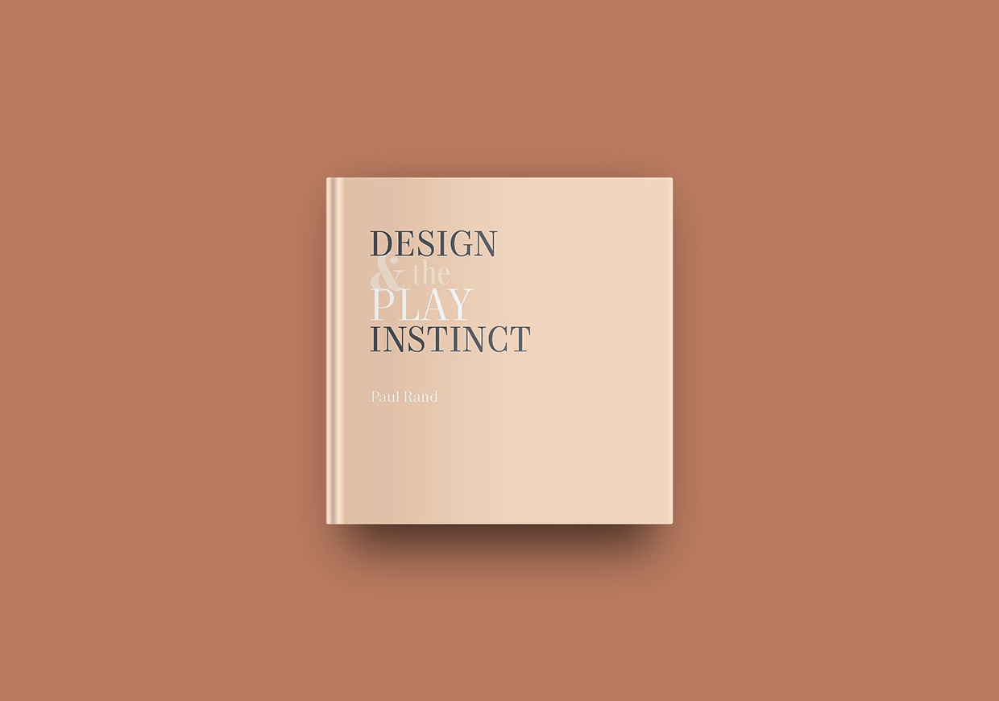

design and the play instinct
book design
For this piece, I was assigned to redesign Paul Rand’s Design and the Play Instinct. I was given only the images and text and was told to design the book in a way that was both visually aesthetic, yet readable. I decided to go with a more classic look by using a serif font and I also tried to make some of the pages more interesting by playing with the color and movement of some of the images.